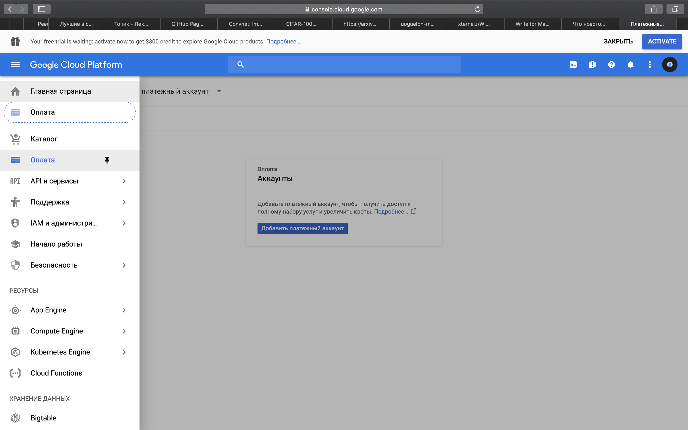
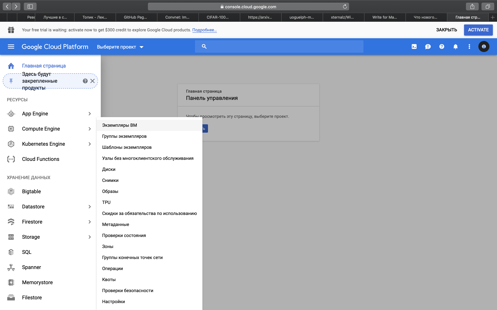
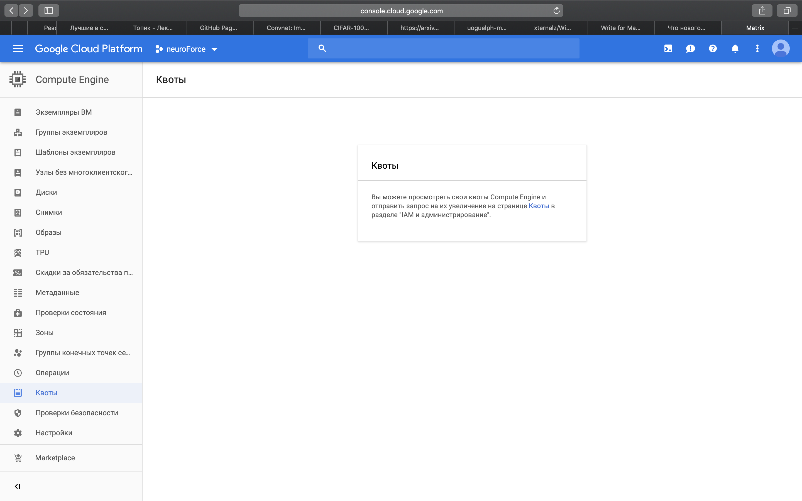
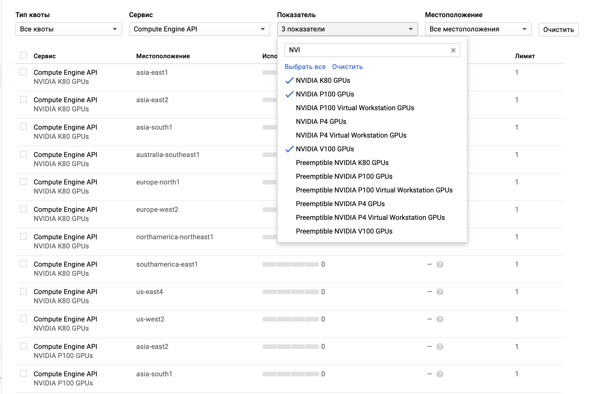
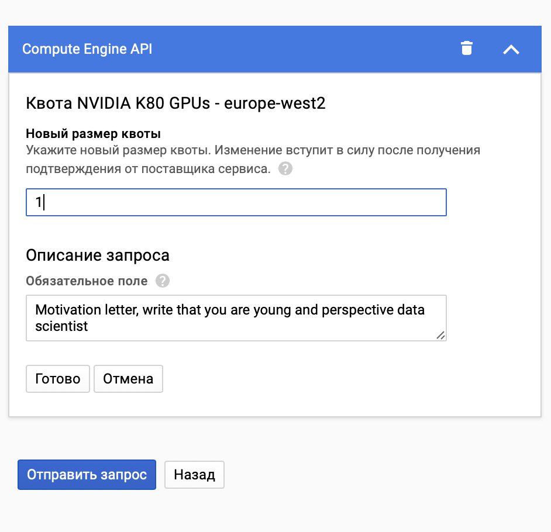
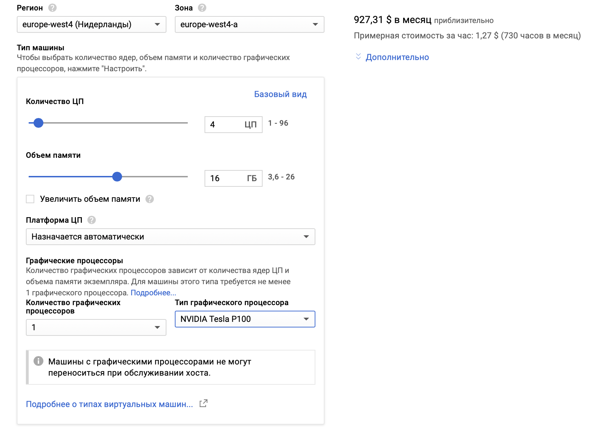
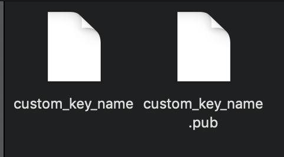
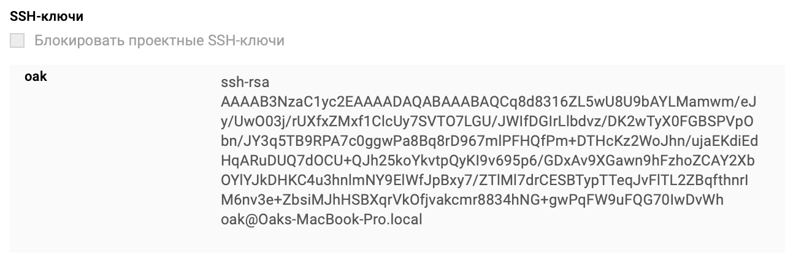
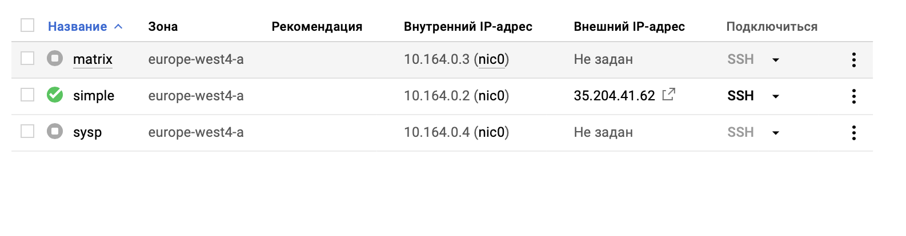

Вы начинающий Data Scientist, посмотревший лекции и разобравшийся с теорией, а теперь жаждущий попрактиковаться, но мощного железа под рукой нет? Что ж, с помощью инструментов компании Google вы можете начать учить ваши первые нейроные сети уже сейчас!
В этом туториале я расскажу и покажу, как настроить доступ к сервису Google Cloud Platform и получить мощную видеокарту на целых 10 Терафлопс!
Найдите сайт google cloud platform
Он выглядит как-то так.
Зарегистрируйтесь с помощью акаунта Google.

Google предложит вам бесплатные 300$.
Вот это же предложение подробнее.

Вас попросят ввести данные вашей карточки.

Если предложение от Гугла не вылезло, то заходим в раздел «Оплата», где сами создаём платёжный аккаунт. Да, тут точно также дадут 300$ на первое время.
Заходим в раздел «Compute Engine» -> Экземпляры ВМ 
Создаём проект
После чего заходим в раздел «Квоты», для того, чтобы запросить увеличение квоты по видеокартам. По умолчанию эта квота равна 0. 
Ищем квоту по видеокартам NVIDIA. Выбираем себе карточку. Для большинства задач подойдет Tesla K80, её дополнительный плюс в том, что она достаточно дешёвая. Но я брал себе Tesla P100, Just for fun.
Tesla P100 как раз таки имеет 10 Терафлопс, у K80 их около 2~3. 
Далее внимательно выбираем себе регион, советую брать Европу или Азию, в них меньше пинг, в целом, помимо пинга отличий особо нет.
ВАЖНО! Перед тем, как запрашивать карточку в том или ином регионе надо проверить, доступна ли она вообще для данного региона.
Сделать это можно тут GPUs on Compute Engine | Compute Engine Documentation | Google Cloud
Доступные регионы случае с NVIDIA Tesla P100
Выбираем квоту, нажимаем «Изменить квоты» в верхней части страницы.

Формируем запрос и отправляем его, ответ придет в районе несколько часов.

Выбираем «Создать экземпляр» 
Выбираем регион, где вам выделили видеокарту

Жмём «Настроить» 
Мой дефолтный setup выглядит как-то так. 4 процессора и 16 Гб оперативки - лучше брать столько или слегка больше, эти ресурсы стоят не так дорого ( на порядок дешевле видеокарты), однако при их нехватке могут возникнуть серьезные подтормаживания. К слову, при тренировке resnet36 все 4 процессора работали на 70-80% и было занято 5~6 Гб оперативной памяти.

Далее выбираем загрузочный диск. Советую брать Ubuntu LTS16, так как на неё более менее спокойно встает Cuda, с 18й же версией у меня возникали проблемы.
По поводу размера не советую сразу брать много, так как за это постоянно списывают деньги, даже когда вы не используете ваш инстанс.
25 Гб для начала более чем достаточно

Обязательно разрешаем HTTP и HTTPS траффик, чтобы была возможность подключения по ssh. Создаем экземпляр.
Вуаля, ваш инстанс готов, осталось подключиться к нему и настроить необходимые компоненты
Одним из вариантов подключения является протокол ssh, сейчас я объясню, как настроить ваш инстанс для работы по ssh.
Для начала генерируем пару ключей на вашем рабочем компьютере с помощью следующей комманды
ssh-keygen
Можно задать вашему ключу любое имя и хранить его в любом месте. Пункт «Passphrase» нужен для дополнительной защиты ключа, его можно пропустить.

После генерации пары ключей нам необходимо закинуть публичный ключ на нашу виртуальную машину. А заходить на неё мы будем с помощью нашего приватного ключа.
Зайдем в папку, где мы сохранили ключи. 
«.pub» - публичный ключ, открываем его в любом текстовом редакторе и копируем содержимое.

Это будет выглядеть как-то так. 
После чего, нажимая на имя нашего инстанса, мы открываем настройку его параметров. Пролистывая вниз находим пункт «SSH-ключи». Вставляем публичный ключ сюда. При желании, изменив последнюю строчку публичного ключа до @ можно поменять имя пользователя. 
Сохраняем изменения и запускаем виртуальную машину
У запущенной машины появится внешний ip адрес, запомним его.

Далее, пишем в терминале следующую команду:
ssh -i path_to_your_private_key username@ip_addres
В моем случае это выгляди так:
ssh -i ~/.ssh/cuctom_key_name oak@35.204.41.62
При подключении могут возникнуть некоторые ошибки или непонятные проишествия, но все они легко гуглятся
Поздравляю вы подключились к вашему первому серверу!
Если вы занимаетесь Data Science, то вам будет необходимо поставить Anaconda и Cuda
Anaconda установить достаточно просто, а как установить CUDA можно почитать тут: CUDA Toolkit 9.0 Downloads | NVIDIA Developer
Если возникают проблемы с запуском jupyter notebook, то стоит установить его через pip и apt-get
Для начала запустим Jupyter Notebook на удаленной машине. Как правило, он уже входит в пакет анаконды, но при необходимости его можно поставить через pip и apt-get.
Советую дополнительно поставить «Tmux» - эта утилита позволит вам запустить Jupyter notebook так, чтобы Егор работа не зависела от shh-сессии, что очень удобно
Пишем Tmux - у нас открывается дополнительный терминал, если его так можно назвать. Пишем следующий код:
jupyter notebook --no-browser --port=BBBB
«—no-browser» - так как мы запускаем на удаленной машине, без этого флага не запустится
«—port = BBBB» - указываем номер порта, желательно диапазон 8000 - 8100 (наверное, лучше уточнить), любой из диапазона на ваш вкус.
Предварительно необходимо настроить пароль
jupyter notebook --generate-config
jupyter notebook password
Или можно скопировать токен, который сгенерирует jupyter notebook и затем вставить его в окошко пароля.
Затем нам необходимо прокинуть порт удаленной машины на нашу локальную машину.
ssh -i ~/.ssh/cuctom_key_name -N -f -L AAAA:localhost:BBBB username@server_ip
Как пример
ssh -i ~/.ssh/cuctom_key_name -N -f -L 8090:localhost:8080 fergus@server_ip
AAAA - порт на нашей локальной машине, желательно диапазон 8000 - 8100 (наверное, лучше уточнить), любой из диапазона на ваш вкус.
BBBB - порт, который мы указали при запуске jupyter notebook на удаленной машине
Затем заходим в браузер, где пишем localhost:AAAA
Вуаля, дерзайте!
(Перенос стиля, как один из use-case-ов применения нейронных сетей)